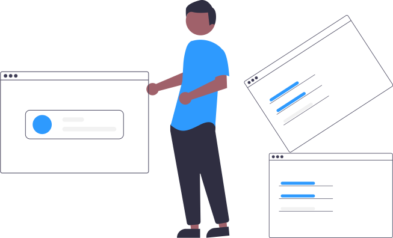

Lenguaje de Señas Mexicanas (LSM) es una página web, la cual busca aprender y comunicar en lenguaje oficial para personas sordomudas.

Propósito
El propósito de la página web LSM es ayudar a las personas a comunicarse de mejor manera con personas sordomudas, esto a partir de poner palabras/frases básicas y el cómo se expresa dicha palabra.